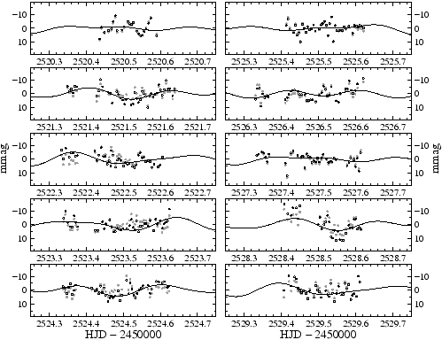
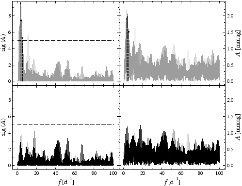

SIGSPEC is called by the command line
SigSpec <project>
where <project> is the name (or path, if desired) of the SIGSPEC project. Before running the program, the user has to provide
Caution: SIGSPEC overwrites existing output files!
There are two conventions for denominating input files.
Furthermore, the user may pass a set of specifications to SIGSPEC by means of a file <project>.ini (see ``The .ini file'', p. ). This file is expected in the same folder as the time series input file and the project directory. For specifications not given by the user, defaults are used.
). This file is expected in the same folder as the time series input file and the project directory. For specifications not given by the user, defaults are used.
Example. The sample project SigSpecNative provides a run without any additional options. The command line is SigSpec SigSpecNative. The sample input file SigSpecNative.dat (381 data points) represents V magnitudes of IC4996#89 (Zwintz et al. 2004; Zwintz & Weiss 2006).
The screen output produced by typing SigSpec SigSpecNative at runtime starts with a standard header.
SSSSSS ii SSSSSS
SS SS SS SS
SS ii gggg g SS p pppp eeeee ccccc
SS ii gg gg SS pp pp ee ee cc cc
SSSSSS ii gg gg SSSSSS pp pp ee ee cc
SS ii gg gg SS pp pp eeeeeee cc
SS ii gg gg SS pp pp ee cc
SS SS ii gg gg SS SS pp pp ee ee cc cc
SSSSSS ii gggggg SSSSSS pppppp eeeee ccccc
gg pp
gg gg pp
ggggg pp
SIGnificance SPECtrum
Version 2.0
************************************************************
by Piet Reegen
Institute of Astronomy
University of Vienna
Tuerkenschanzstrasse 17
1180 Vienna, Austria
Release date: August 18, 2009
SIGSPEC processes the command line, checks whether a project directory SigSpecNative is present, and searches for a file SigSpecNative.ini (see ``The .ini file'', p. ). Since there is no such file present, four warning messages are produced.
). Since there is no such file present, four warning messages are produced.
*** start **************************************************
command line interface
Checking availability of project directory SigSpecNative...
project directory SigSpecNative ok.
loading .ini file
Warning: IniFile_SSCols 001
Failed to open .ini file.
Warning: IniFile_WCols 001
Failed to open .ini file.
Warning: IniFile_LoadIni 001
Failed to open .ini file.
Warning: IniFile_Cind 001
Failed to open .ini file.
The next task is to load the input file SigSpecNative.dat. SIGSPEC provides the number of rows, the time interval width, and the standard deviation of the observable.
*** loading time series input file(s) ********************** SigSpecNative.dat *** time series properties ********************************* points 381, time base 9.17532, rms dev 0.00449592
The next section contains the specifications for the DFT and significance spectra to be calculated.
*** preparing to run SigSpec ******************************* Rayleigh frequency resolution 0.1089880382935977 oversampling ratio 20.0000000000000000 frequency spacing 0.0054494019146799 lower frequency limit 0.0000000000000000 upper frequency limit 100.4651736990383739 Nyquist coefficient 0.5000000000000000 number of frequencies 18437
As SIGSPEC performs the prewhitening sequence, a list of detected signal components is displayed. The screen output contains the index of the identified component (a line number), the sig, the time-domain rms deviation before prewhitening the corresponding signal, and the csig. The last line contains an insignificant component that meets the breakup condition. In the present example, the default breakup condition (the sig to drop below 5) is applied, which is satisfied in the fourth iteration, where the maximum sig is 4.10802.
*** running SigSpec **************************************** 1 freq 3.13205 sig 9.54539 rms 0.00449592 csig 9.54539 2 freq 3.98471 sig 7.43085 rms 0.00422861 csig 7.42753 3 freq 5.40684 sig 5.30164 rms 0.0040257 csig 5.2984 4 freq 17.3677 sig 4.13698 rms 0.00388775 csig 4.10802
On exit, SIGSPEC displays a good-bye message.
Finished. ************************************************************ Thank you for using SigSpec! Questions or comments? Please contact Piet Reegen (reegen@astro.univie.ac.at) Bye!
|

|
|

|
If no special output is selected in a file SigSpecNative.ini, SIGSPEC produces the following output files in the project directory SigSpecNative:
Furthermore, the user may pass a set of specifications to SIGSPEC in a file <project>.ini (see ``The .ini file'', p. ). For specifications not given by the user, defaults are used.
). For specifications not given by the user, defaults are used.